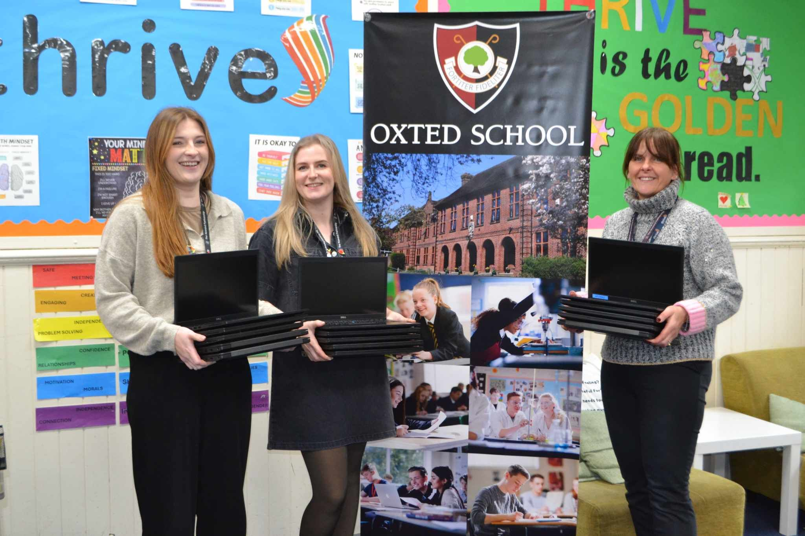

Our story
Started in a pandemic. Still going strong.
Level Up Laptop Appeal was founded by Martin Saunders in May 2020 in response to the COVID-19 pandemic. Young people were sent home with schools setting work to be done online, and it quickly became clear that many students didn't have suitable IT equipment to study on — many were trying to complete school work and join online lessons on a mobile phone.
Martin works in the IT industry and felt he could do something about it. Within the first three months he collected, securely wiped, refurbished and delivered over 100 laptops to local schools in Horley, Surrey.
